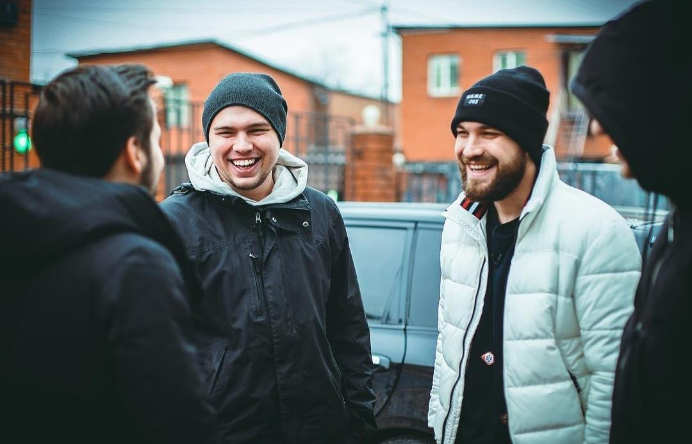
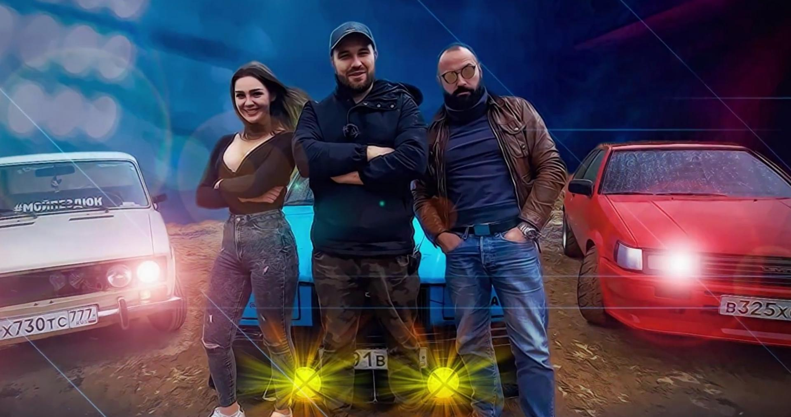
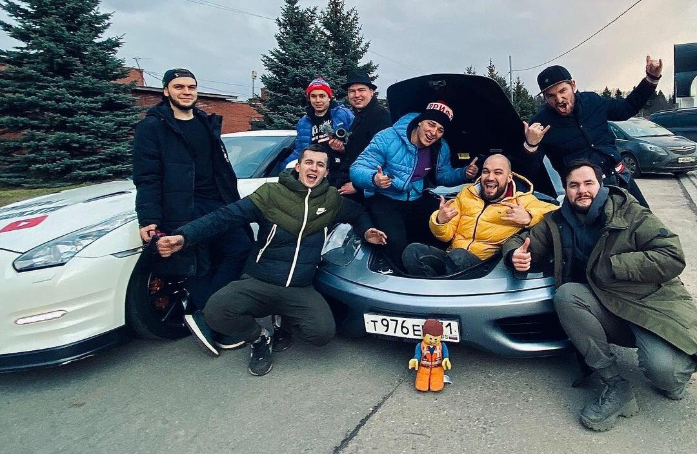
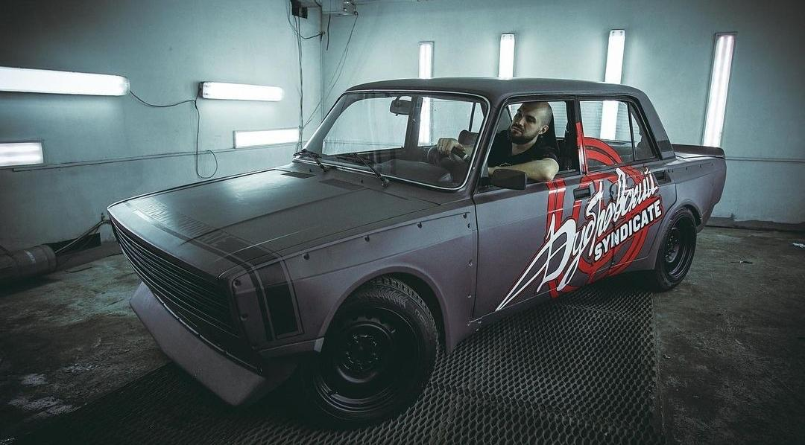
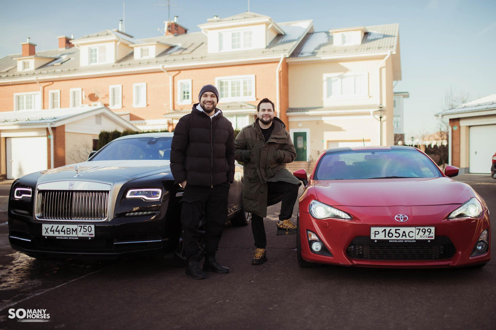

У истоков
После переезда в Москву в 2016 Жекич набирал себе людей для полноценной работы: операторы, монтажеры… Но ему с этим не везло, пока не познакомился с Сашей, оператором и будущим продюсером, который сам пришел и рассказал, что не так с точки зрителя. Далее подтянулась уже и Анастасия Мыскина, монтажер синдиката, а также Игорь, режиссер монтажа.
Формирование
Летом 2017 года Жекич запустил шоу «Тачка невозврата». Рубрика рассказывала, как простой парень проходит путь от полумертвой ВАЗ-2106 до полноценных спорткаров. И, конечно, экшен: гонки, эксперименты, дрифт… И команда! Начиная с первой серии блогер начинает знакомиться с разными людьми. Например, в 6 серии Дубровский встречает Ваню Зайцева (тогда у него еще была Volvo 940 SL) на гонках. Позже, уже в 9 эпизоде перед зрителями предстает Ваня из Custom Box, его вычислили по одной восстановленной машине, где красовалась наклейка с названием мастерской, в которой воплотиться еще немало безумных идей. А к 10 серии нас знакомят с Томой Ждановой, ее блогер уже нашел в инстаграме. Кстати, тогда же, в октябре 2017, официально создали «Дубровский Синдикат» просто веселья ради. Изначально задумывалось, что это объединение будет неким клубом стритрейсеров. Однако влияние росло и планы менялись…
Развитие команды
После нескольких сезонов «Тачки невозврата» началась «Операция Феррари», где блогеры перепродавали авто в надежде накопить на итальянский бренд. С некоторыми машинами им помогали Вадим и Александр Ткаченков буквально на парковке. И со временем они тоже влились в коллектив. Следующим персонажем в объединении стал уже Михаил, учредитель автосалона CHEST AVTO. Он предложил Дубровскому предложение, от которого нельзя было отказаться: если Жекич пригонит элитных машин для перепродажи на 50 млн. рублей, то половина бизнеса станет его. Условие выполнено, блогер в доле. Еще немаловажным стал Андрей, владелец СТО, где обслуживались почти все в синдикате. Ему и его станции тоже предложили место под солнцем.
Жекич Дубровский
Основополагающий канал, на котором Евгений публикует видео с далекого 2013 года, именно здесь и начинались все проекты блогера: «Тачка невозврата», «JDMщики», «Тачки из NFS»… После «Операции Феррари» ролики стали подразделяться на два типа: личное и необычное. С первым понятно - просто влоги о жизни. Со вторым – сложнее. Непросто каждый раз удивлять зрителя одними и теми же машинами. А вот редким - вполне… Поэтому теперь Дубровский – своеобразный охотник за необычными экземплярами. Это подтверждает и его хобби по коллекционированию раритетов.
Автосалон синдиката
Изначально сам канал назывался «Жизнь Синдиката» и на нем были ролики live-формата и, по сути, он простаивал попусту. Тогда Саша (оператор) предложил Грише занять его. Тем более, был готов отличный проект «Ведра». В этом шоу Завозин находил самые гнилые, самые битые, самые проблемные авто. Дрова, одним словом. Рубрика прижилась и, к тому же, помогла быстрее накопить на Ferrari. Однако все поменялось в апреле 2021, когда Гриша ушел из синдиката. Тогда этот канал занял Миша, совладелец автосалона.